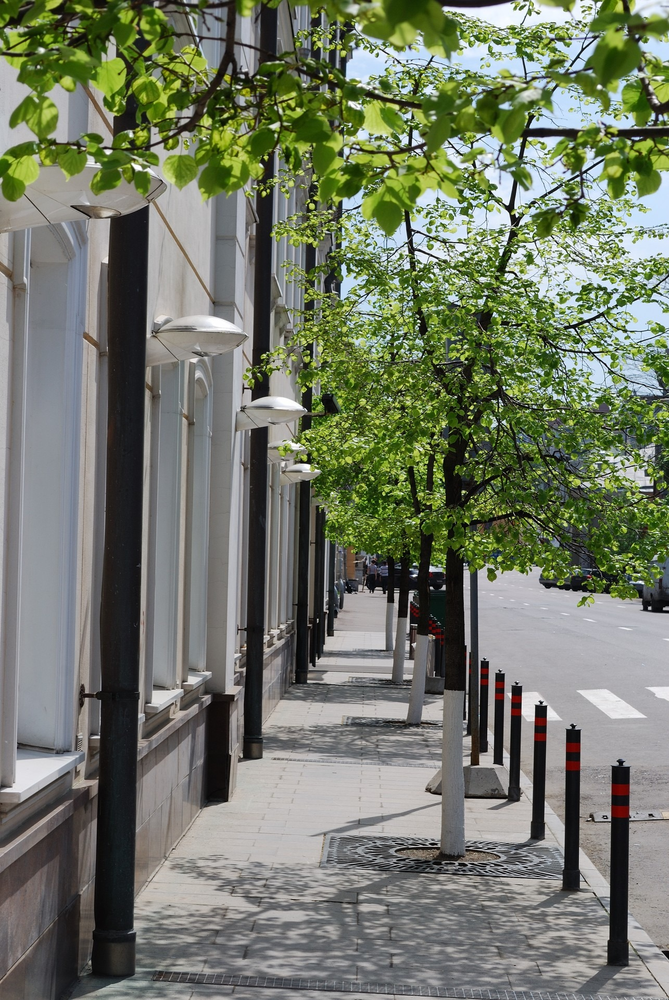

<ion-view title="Índices da cidade" id="pgConservacao" style="background-color:#D2EAD0;">
  <ion-content padding="true" class="manual-ios-statusbar-padding" scroll="true" >
    
    <div class="spacer" style="width: 300px; height: 2px;"></div>
    <div class="list card">

    <div class="item item-avatar">
        
        <h2>Conservação</h2>
        <p>Cidade bonita de viver</p>
    </div>

    <div class="item item-body">
        
            <p>
                Avalie a quantidade de buracos nas vias sem providências do poder público<br>
                Se a limpeza e a conservação de ruas e praças está em dia<br>
                Se a coleta de lixo é adequada<br><br>
                
                Contribua para que todo cidadão possa ter uma visão geral dos problemas nos serviços públicos na cidade<br> 
            </p>
            <p>
                <a href="#" class="subdued">0 Comments</a>
            </p>
    </div>
    </div>
    <a id="pgIndiceEdu-button1" class="button button-assertive  button-block ion-thumbsdown" ng-click="inserirIndice('Conservação')"> Indicar problemas</a>
    <a>{{retorno}}</a>  
  </ion-content>  
</ion-view>
    